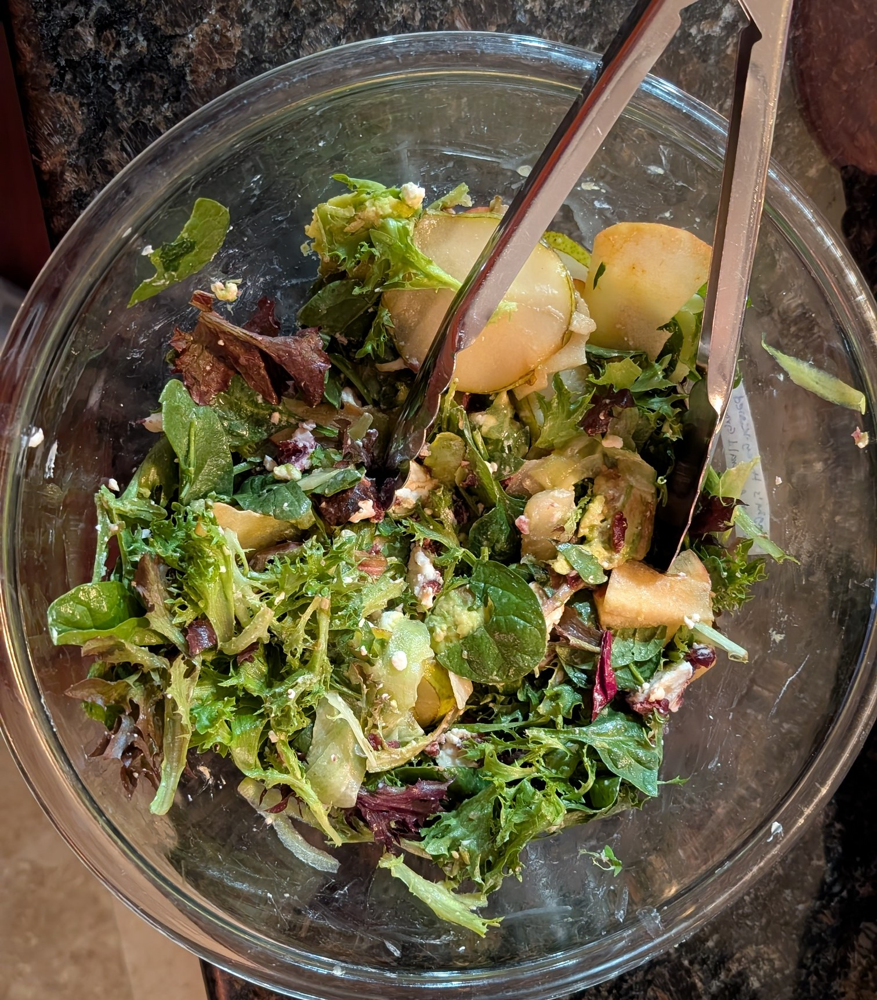

Pear & Goat Cheese Salad
Prep Time: 5 mins
Cook Time: 10 mins
This is one of my sister's favorite salads to make. You can add any toppings you like, such as pumpkin seeds, craisins, nuts, and more. The key to this salad is in the creaminess of the goat cheese, and the sweetness of the pear.
Tools
- Large serving bowl
- Salad servers or tongs
Ingredients
- Mains
- 5 oz Salad Greens
- 1 peeled and half-sliced pear
- 3/4 cup of goat cheese
- Toasted Candied Pecans
- Optional Toppings
- Croutons
- Pumpkin Seeds
- Craisins
- Mixed or candied nuts
- Beets
- Dressings
- Pear Vinaigrette
- Balsalmic Vinaigrette
- Red Wine Vinaigrette
Instructions
-
Dressing:
- You can use a store bought dressing, or prepare an easy red wine vinaigrette. Mix together 1/4 cup olive oil, 2 Tbsp of Red Wine Vinegar, 1 tsp of Dijon Mustard, and a pinch of salt and pepper to taste. Candied Pecans:
- Over medium-low heat, toast 1 cup of pecan halves for about 2-3 minutes. Keep an eye on them because they burn easy. Remove from heat and set aside.
- Next, over medium heat, mix together 1/2 Tbsp of water, 1 1/2 Tbsp of brown sugar, and until dissolved.
- Then pour this mixture over the pecan halves and toss until well coated.
- Salad Assembly: Separate the pear slices and pat them dry with a towel (so that they stick less).
- Add your greens to the bowl and candied pecans to the bowl. As well as other toppings. Then add the sliced pears.
- Use a fork to break off chunks of the goat cheese and add them to your salad.
- Finally, add the salad dressing, and mix everything together.
Enjoy this as an appetizer or a side to your delicious meal.